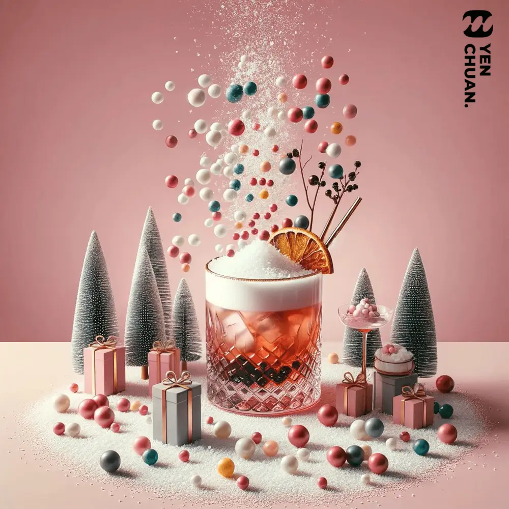
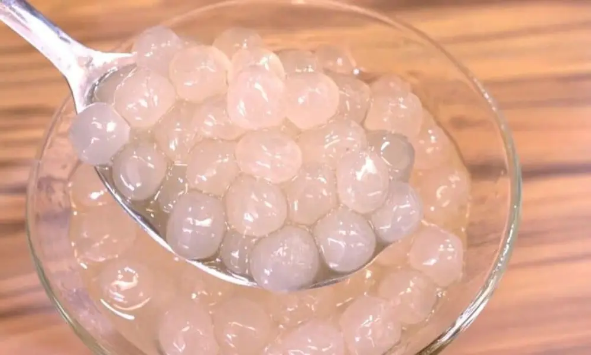
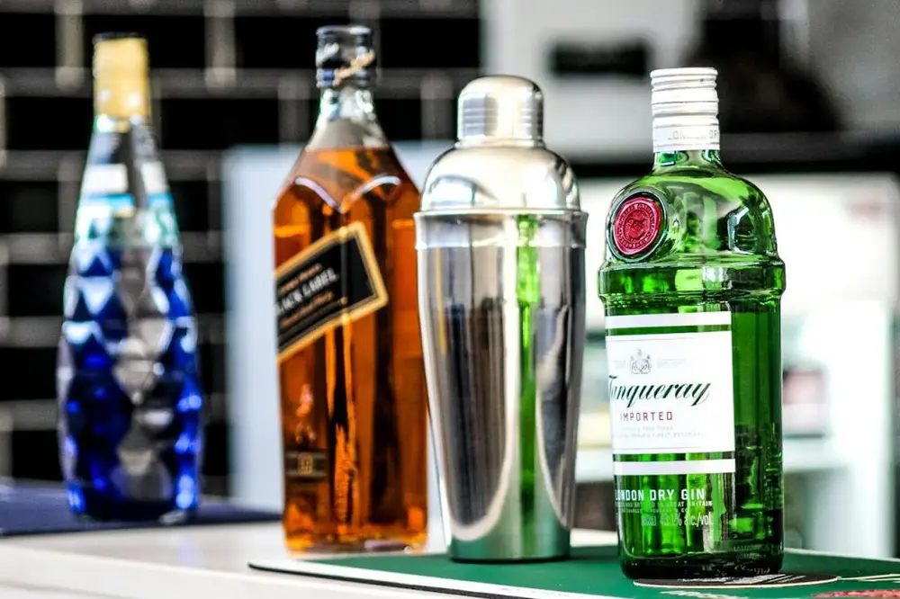

Articles / Tips & trends
Spice up your drinks with alcoholic crystal boba!
2023-12-14 · New products, New products

Merry Christmas! It’s time for merriment, presents and partying with family and friends! Much like any other party, seasonal cocktails and other tipples are a staple on any Christmas dinner table.
If you want to spice up your eggnog or other drinks, our alcoholic crystal boba are the perfect choice!
Read on to learn more about those boozy treats!

Crispy crystal boba!
Any bubble tea lover would be familiar with crystal boba – those crispy, chewy delights are a healthier substitution for tapioca pearls.
While bubble tea shops usually use plain/brown sugar crystal boba, we take it to the next level – by adding booze!
Each alcoholic crystal boba is steeped in syrup with added real alcohol, giving them the extra tipsy kick. In fact, each packet of boba contains at least 5g of real alcohol!
What’s more, we source our whiskey from local brewers as well – Want a taste of Taiwanese whiskey? Here’s your chance!
Flavours
Our alcoholic crystal boba comes in the following flavours:
- Whiskey
- Gin
- Vodka
- Absinth
- Kahlua Coffee Liqueur
- Red Fruko Absinth
- Cointreau

What can you do with it?
The sky’s the limit! Here’s some examples to get started:
Cocktails
Crystal boba are a great way to add colour and a playful crispiness to your cocktails!
Try adding absinth boba for a dash of its classic liquorice-esque taste, or use red fruko boba to add a hint of cinnamon!
Meanwhile, cointreau boba boasts a delightful orangey, tangy taste, perfect for more fruity cocktails.
Coffee
Want to give a unique twist to the classic Irish Coffee? Add a generous helping of whiskey boba, and enjoy a fragrant crunch with your brew!
Fancy a stronger coffee flavour? Mix in Kahlua coffee boba – the combination of sweet liqueur and coffee is truly divine!
Chocolate
Hot chocolate is a classic companion during the winter seasons!
Want to warm yourself further with some tipsy help? Drop in some gin or vodka boba, and enjoy a sweet, boozy treat!
For a even fuller experience, add a generous helping of whipped cream, then drizzle on some syrup of your choice!

Get started!
Ready to spice up your Christmas drinks with our alcoholic crystal boba? Contact us to learn more!